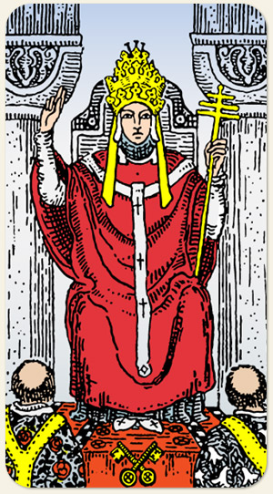

Ligado ao signo de Touro e a Sagitário. Pessoas devotas, instruídas,sábias. Falso moralismo, ciúmes, hipocrisia, apego a crenças ultrapassadas.
O Número Dois aparece nas Colunas, nas duas chaves, e nos dois discípulos. O Número Três aparece nas três cruzes, no cetro de três níveis e na coroa que também possui três níveis.
Positivo: Pessoa capaz de alcançar a devoção dos outros, pessoa que domina um ramo do conhecimento, acolhimento, inspiração, carisma, ensino.
Negativo: Fanatismo, manipulação, palavra sem força, propaganda enganosa, falso guru, praguejamento, danos espirituais causados por rezas e orações.
Amor e Sexo: Pessoa que manda no parceiro, pedir ajuda terapêutica, frieza sexual, falta de iniciativa. O Papa assume o cargo e costuma ficar até o fim da vida: pode falar de um casamento com estabilidade ou estagnação, de fachada, a pessoa senta no trono mas não exerce o cargo, relações duradouras.
Trabalho e Dinheiro: Pessoa especializada, o chefe do chefe, a cúpula administrativa, alto escalão, templos religiosos, empresas de grande porte. Este arcano tem muito de dinheiro e riqueza, bens que precisam ser liquidados para virar dinheiro, patrimônio, herança, ter tudo do bom e do melhor, prejuízos ou dívidas por gastos pessoais, ser esnobe, hierarquia rígida.
Espiritualidade: Ter tudo no material e no espiritual, é a pessoa que entende e transita livremente entre estes dois mundos. Achar que não pode enriquecer com trabalhos espirituais, a ética e a moral. Sacerdotisa é a espiritualidade e Para é religião. Pessoas desacreditadas da sua religião, abandono da fé, revolta com Deus, questionar as bases da religião. Mentores espirituais, Oxalá, Jesus, ter uma fé inabalável, figuras masculinas de santidade, grandes oradores. Pessoa especialista em magia, pode ser alguém que trabalha formalmente com isso, sacerdotes de um seguimento religioso. Intervenções que possuem a intenção de seduzir. Intervenções que podem ser resolvidas por meio de reza, ajuda espiritual especializada, santuários. Papa com Ás de Copas: tomar hóstia.
Símbolos: Papa, Monges, Trono, Mitra, Cetro de Três Níveis, Cruz, Chaves Cruzadas, Colunas, Rosas Vermelhas, Lírios Brancos.
Cores: Vermelho, Amarelo, Azul, Cinza.
Elementos: Espírito e Espírito.